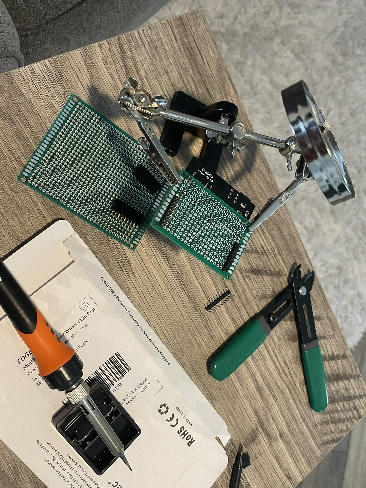
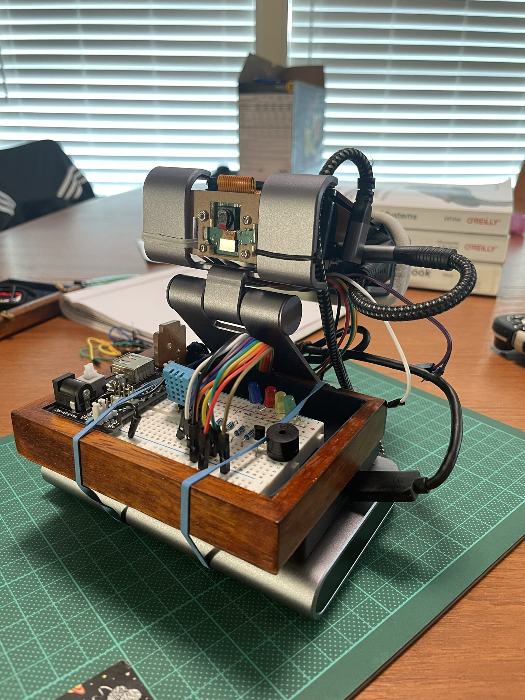

entries
-
May 11, 2026"pip install p4n4"The CLI reaches its first public milestone. p4n4 v0.1.0 is tagged, built, and published to PyPI.

-
May 4, 2026Six Sensors, Six BreadboardsThe sensor set expands with six new modules assigned to their own breadboards, and sketched into circuits.

-
Apr 20, 2026The Dev Board Takes ShapeLoose components on a desk become a proper integrated unit. With a wooden base, the Pi, hard drive, USB hub, cameras, power, and GPIO boards all mount to it, and the perfboard gets its first solder work.

-
Mar 30, 2026DietPi, Rebuilt, First BlinkThe prototype gets a cleaner assembly, the OS gets swapped out for DietPi, and the first GPIO script runs.

-
Mar 4, 2026Wiring It All TogetherA ribbon cable, a power board, a breadboard full of sensors and LEDs, and the first real data flowing through the pipeline.

-
Feb 11, 2026Stack Up, Brainstorming the BoardSetup Docker on the Pi, the MING stack comes up for the first time, and a GPIO test board gets designed.

-
Nov 26, 2025Building p4n4: The BeginningEvery project starts somewhere... This one started with a question about IoT wtih local-first AI.